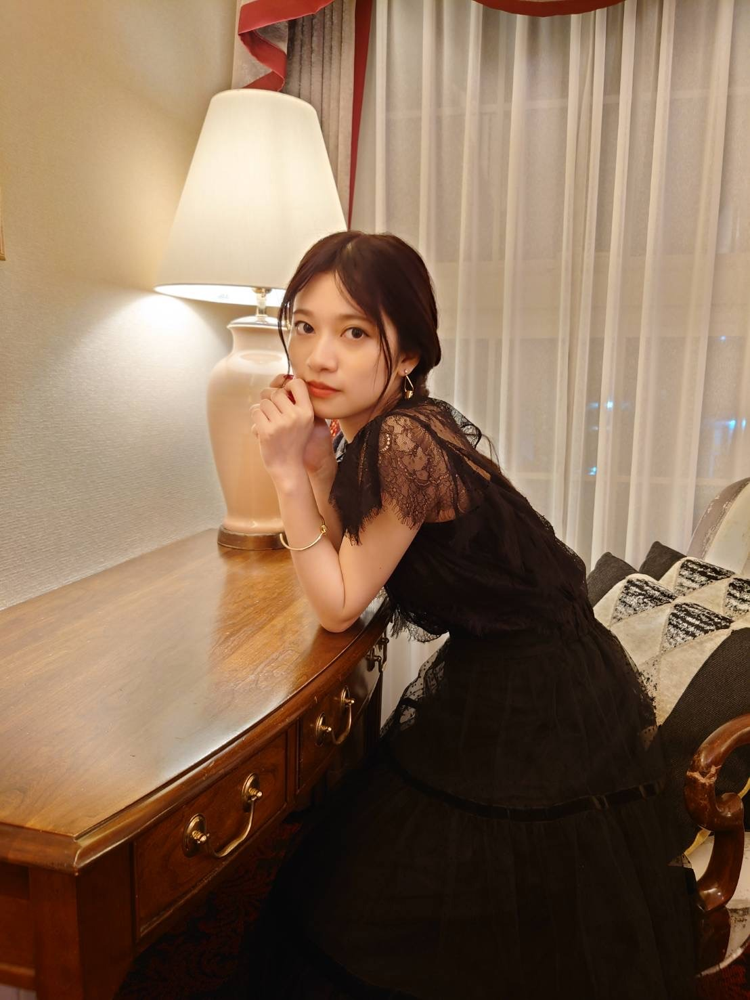
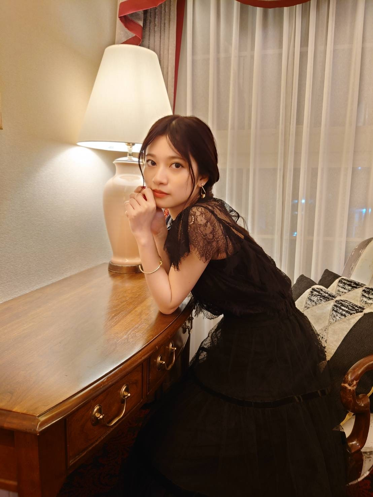

2021/0911Satげんまいちゃ
写真集沢山のおめでとうありがとうございます。✨
解禁になるまで凄く不安でした、、、
数年前の私は凄く写真集というものに憧れて
いつか出せたら素敵なことだなーと思っていましたが
ここ最近の私はそこに対して
寧ろ不安を感じることの方が多くなっていきました。
私は個性というものに対してそれはその人にしか持てない武器と解釈しているけどそう思わない人もいて
それらを踏み捻られたらどうしようとか
自分らしさを大切にしてきたからこそ
自分らしくいらなかったときの怖さを感じていました。
きっと人生においても大切な節目になる
それは自分自身がアイドルが好きで
自分が買っていた側だったからこそ思うことがあり
アイドルにとって写真集はどういったものか
アイドルになる前の解釈
アイドルになってからの解釈
当たり前のことでは無いとしみじみ感じていたから
こそ自分の中で色々葛藤がありました。
でも、そんなときに
私の写真集が決まった事を知ったメンバー達が
蘭世自身でプロデュースして欲しいとか
蘭世にしか出せないものがあるからそれがみたいと
言ってくれて
ほぼ毎日ように一緒に居て
長年苦楽を共にしている人達が
かけてくれた言葉の説得力はとてもパワーになり
気持ちが楽になり凄く自信に繋がりました。
特にみなみちゃんと松村さんは
写真集が決定したときからずっと優しい言葉をかけてくれたのはとても心強かったです。☺️
みなみちゃんは撮影前日も
みなみがついていこうかーって言ってくれたのが
凄くほっこりしたよー。
本当にありがとうだよー。☺️✨
決まってからというもの長い期間
1人で嬉しさやプレッシャーいろんな感情を
行き来していました。
写真集という1つの作品を出せることは
当たり前ではないからこそ
今までのアイドルとしての努力が身を結び認められ
それが形になる事の喜びと凄さ
私もここまで頑張ってこれたんだなーと
自分を認めてあげようと浸る日もあれば
普段の活動を続きながらも
ロケ地や撮影のテーマや衣装
私物ということもあり準備に追われたり
向き合えば向き合うほど
考えれば考えてしまうほど
やっぱりどうしても私なんかがってネガティブな方に考えてしまったり後ろめたくなる日もありました。
沢山時間をかけて
大切な人達と話し合いました。
いろんな人の話を聞くうちに
私よりも喜んでくれる人がいて
どんなに不安に思う瞬間があっても
1人でも喜んでくれる人が居るならいいなと思えるようになっていました。
自分のこの瞬間
等身大の姿を綺麗に残してもらうのは
誰もが出来るわけではなくて
例えば自分がおばあちゃんになったとき
昔はこんなことしていて
若い時も変わらないでしょって
自慢できる人、作品にしたいなーと思うようになれて
こんなこともあったねーって写真集を通して
振り返られるのって
本当に贅沢だなーって
とにかく今は嬉しいお知らせが出来たことと
無事形になりそうなこと
皆さんに報告ができたことにほっとしています、、、
本当に私のプライベート私服盛り沢山です。
着数も凄く凄く凄く多く挑戦しました。☺️✨
まだまだ発売されるまでドキドキしているのですが
一緒に盛り上げて支えてくれると心強いです。
全ての人に感謝して
私も発売まで皆さんと一緒にわくわくしたり
ドキドキしながら楽しめたらいいなーと思います。
ブログは勿論
大好きなモバメ
沢山の方に見てもらえるように引き続きInstagram
この度Twitterも始まりました。
Twitterの方はスタッフさんと
私が赤ちゃんの頃から大切にしている
相方も同然青いクマの
ひょろひょろくんが担当しております。
特にひょろひょろくんが色々と宣伝頑張ってくれているのでよかったら覗いてあげてください。
この時期なかなか
会えないからこそ繋がりを感じられるように
沢山楽しんで貰えるように頑張りますね。
なので是非、仲良くして下さい。
これからも宜しくお願いいたします。☺️✨

MVについても書きたいのですが
長過ぎちゃうと思うので
また、近々私の思いをよかったら聞いてください。
そして、
ももこ最後までお疲れ様ー。
全員で乃木坂46だと私は思っているけど
最後の3期生だけでの活動を見ていて
やっぱり同期は特別なんだなーと感じました。
じゅんな、みりあ、本当にお疲れ様。
本当に辛いことが沢山あって
幼い頃の私達にも抱えきれないほど
それぞれに悩みがあったと思います。
でも、だからこそとても力強くて魅力的な女性に
成長したと思います。
私達よく頑張ったよー。☺️✨
また、2期生会をひらける様になるのも楽しみだし
もっと大人になって
乃木坂46時代を語ったりするのも楽しそうだなー
みんなに会うのも楽しみです。
これからもここで学んだことは生きると思うし
絶対幸せになってください。✨
数少ない同期です。
おばあちゃんになっても仲良くしてねー。
ばいばいです。
解禁になるまで凄く不安でした、、、
数年前の私は凄く写真集というものに憧れて
いつか出せたら素敵なことだなーと思っていましたが
ここ最近の私はそこに対して
寧ろ不安を感じることの方が多くなっていきました。
私は個性というものに対してそれはその人にしか持てない武器と解釈しているけどそう思わない人もいて
それらを踏み捻られたらどうしようとか
自分らしさを大切にしてきたからこそ
自分らしくいらなかったときの怖さを感じていました。
きっと人生においても大切な節目になる
それは自分自身がアイドルが好きで
自分が買っていた側だったからこそ思うことがあり
アイドルにとって写真集はどういったものか
アイドルになる前の解釈
アイドルになってからの解釈
当たり前のことでは無いとしみじみ感じていたから
こそ自分の中で色々葛藤がありました。
でも、そんなときに
私の写真集が決まった事を知ったメンバー達が
蘭世自身でプロデュースして欲しいとか
蘭世にしか出せないものがあるからそれがみたいと
言ってくれて
ほぼ毎日ように一緒に居て
長年苦楽を共にしている人達が
かけてくれた言葉の説得力はとてもパワーになり
気持ちが楽になり凄く自信に繋がりました。
特にみなみちゃんと松村さんは
写真集が決定したときからずっと優しい言葉をかけてくれたのはとても心強かったです。☺️
みなみちゃんは撮影前日も
みなみがついていこうかーって言ってくれたのが
凄くほっこりしたよー。
本当にありがとうだよー。☺️✨
決まってからというもの長い期間
1人で嬉しさやプレッシャーいろんな感情を
行き来していました。
写真集という1つの作品を出せることは
当たり前ではないからこそ
今までのアイドルとしての努力が身を結び認められ
それが形になる事の喜びと凄さ
私もここまで頑張ってこれたんだなーと
自分を認めてあげようと浸る日もあれば
普段の活動を続きながらも
ロケ地や撮影のテーマや衣装
私物ということもあり準備に追われたり
向き合えば向き合うほど
考えれば考えてしまうほど
やっぱりどうしても私なんかがってネガティブな方に考えてしまったり後ろめたくなる日もありました。
沢山時間をかけて
大切な人達と話し合いました。
いろんな人の話を聞くうちに
私よりも喜んでくれる人がいて
どんなに不安に思う瞬間があっても
1人でも喜んでくれる人が居るならいいなと思えるようになっていました。
自分のこの瞬間
等身大の姿を綺麗に残してもらうのは
誰もが出来るわけではなくて
例えば自分がおばあちゃんになったとき
昔はこんなことしていて
若い時も変わらないでしょって
自慢できる人、作品にしたいなーと思うようになれて
こんなこともあったねーって写真集を通して
振り返られるのって
本当に贅沢だなーって
とにかく今は嬉しいお知らせが出来たことと
無事形になりそうなこと
皆さんに報告ができたことにほっとしています、、、
本当に私のプライベート私服盛り沢山です。
着数も凄く凄く凄く多く挑戦しました。☺️✨
まだまだ発売されるまでドキドキしているのですが
一緒に盛り上げて支えてくれると心強いです。
全ての人に感謝して
私も発売まで皆さんと一緒にわくわくしたり
ドキドキしながら楽しめたらいいなーと思います。
ブログは勿論
大好きなモバメ
沢山の方に見てもらえるように引き続きInstagram
この度Twitterも始まりました。
Twitterの方はスタッフさんと
私が赤ちゃんの頃から大切にしている
相方も同然青いクマの
ひょろひょろくんが担当しております。
特にひょろひょろくんが色々と宣伝頑張ってくれているのでよかったら覗いてあげてください。
この時期なかなか
会えないからこそ繋がりを感じられるように
沢山楽しんで貰えるように頑張りますね。
なので是非、仲良くして下さい。
これからも宜しくお願いいたします。☺️✨

MVについても書きたいのですが
長過ぎちゃうと思うので
また、近々私の思いをよかったら聞いてください。
そして、
ももこ最後までお疲れ様ー。
全員で乃木坂46だと私は思っているけど
最後の3期生だけでの活動を見ていて
やっぱり同期は特別なんだなーと感じました。
じゅんな、みりあ、本当にお疲れ様。
本当に辛いことが沢山あって
幼い頃の私達にも抱えきれないほど
それぞれに悩みがあったと思います。
でも、だからこそとても力強くて魅力的な女性に
成長したと思います。
私達よく頑張ったよー。☺️✨
また、2期生会をひらける様になるのも楽しみだし
もっと大人になって
乃木坂46時代を語ったりするのも楽しそうだなー
みんなに会うのも楽しみです。
これからもここで学んだことは生きると思うし
絶対幸せになってください。✨
数少ない同期です。
おばあちゃんになっても仲良くしてねー。
ばいばいです。
2021/09/11 18:36
コメント(522)
モバメありがとうね。 蘭世ちゃんセンター楽曲5曲かあ！
確か「ボーダー」「ブランコ」「その女」「滑走路」「マシンガンレイン」で合ってるかな⁉️
「滑走路」は僕大好きな曲やねん！楽譜欲しい
蘭世ちゃんの写真集は親戚中買ってくれるでしょ
どの写真のカットも素敵で可愛いけど、見返り美人シリーズはめっちゃ好きやなあ。あれは惚れてまうやろ
沢山写真集の情報が解禁されて嬉しいよ。いつも楽しみなんだあ
蘭世ちゃん卒業おめでとう。
蘭世ちゃんのことずっと好きだったから寂しいです。
ファッションが大好きなの。
蘭世ちゃんお疲れさま。
応援できて楽しかったよー
蘭世ちゃんのことずっと好きだったから寂しいです。
ファッションが大好きなの。
蘭世ちゃんお疲れさま。
応援できて楽しかったよー
上手く言葉がまとまらないからまたまとまったら伝えます。
とりあえず、今まで本当にありがとう。
握手会やライブで沢山会えて、直接話せて幸せでした。
乃木坂46の寺田蘭世に出会えて良かったです。
最後までよろしく！
とりあえず、今まで本当にありがとう。
握手会やライブで沢山会えて、直接話せて幸せでした。
乃木坂46の寺田蘭世に出会えて良かったです。
最後までよろしく！
蘭世！
動画観たよ！
でも、なんかまた戻ったら消されててびっくりしたよ！
蘭世！
ありがとう。
8年間、お疲れ様。
蘭世は芯がしっかりしてて、応援してて楽しかった！
ありがとうございました！
これからも応援してます！
動画観たよ！
でも、なんかまた戻ったら消されててびっくりしたよ！
蘭世！
ありがとう。
8年間、お疲れ様。
蘭世は芯がしっかりしてて、応援してて楽しかった！
ありがとうございました！
これからも応援してます！
蘭世ちゃんのラストシングル&写真集予約したよ〜！TYPE-A楽しみ♡
蘭世ちゃん、お疲れ様です。
今は言葉が出てこないので、
落ち着いたらまたコメントさせてもらいます
( ；∀；)
今は言葉が出てこないので、
落ち着いたらまたコメントさせてもらいます
( ；∀；)
お久しぶりです。
色々伝えたいことが溜まっていますが、まずは色んなことに対してですがありがとうございます。
これに尽きます。
また自分の中で整理がついたらコメントします。
本当にありがとう
色々伝えたいことが溜まっていますが、まずは色んなことに対してですがありがとうございます。
これに尽きます。
また自分の中で整理がついたらコメントします。
本当にありがとう
お疲れ様ですお知らせ見ました。
ここ最近の雰囲気的にこうなる事がなんとなく察してはいたけど実際に現実になると正直全く受け止められないです。
でも蘭世さんが決めた事だし卒業してもこれから応援していきたいと思います。もう少し時間があるのでその間に蘭世さんに出会えた事に感謝しながら応援していきたいと思います！
ここ最近の雰囲気的にこうなる事がなんとなく察してはいたけど実際に現実になると正直全く受け止められないです。
でも蘭世さんが決めた事だし卒業してもこれから応援していきたいと思います。もう少し時間があるのでその間に蘭世さんに出会えた事に感謝しながら応援していきたいと思います！
やぁ最愛なる蘭世
20時のお知らせ観たで。
正直、まだ心が追いついてないけど、メールはちゃんと返すわな。
メ―ルありがとう！
こちらこそ明日からも宜しくな。
ブログもちゃんと読むわ。
いやそうでもないで。
変わってるでちゃんと大人な女性の顔になってる。
そういうのも大事なとこだと思う。
人見知りでいるよりかは。
この先もそういう動じない心は大事だと思うからな。
きっとまた後で。
ドキュメンタリーの予告見たけど、らんぜもついに卒業かぁ。
2期生もこれで4人となり寂しさが増しますが、らんぜの未来がよりよいものでありますように。
2期生もこれで4人となり寂しさが増しますが、らんぜの未来がよりよいものでありますように。
蘭世ちゃん。
わたしが初めて乃木坂のライブに行ったのはアンダーライブでした。
蘭世ちゃんがセンターの滑走路の時です。
あの日の光景を忘れられないです。
蘭世ちゃんが滑走路を踊っている姿にあっという間に心を奪われました。
今でも滑走路を聞くとあの日の光景が思い浮かびます。
乃木坂になりたいな～って思いました。
その夢は叶わないけれど、初めて乃木坂のライブが蘭世ちゃんが座長のアンダラで良かった。と心の底から奥底から本当に奥底からから想ってます。
マシンガンレインかっこいいです。
写真集楽しみです！！！
大好きです！！！
蘭世ちゃんの服とか髪型とか可愛くてかっこよくて素敵で憧れます。
2期生らぶです！
蘭世ちゃんらぶです！！
わたしが初めて乃木坂のライブに行ったのはアンダーライブでした。
蘭世ちゃんがセンターの滑走路の時です。
あの日の光景を忘れられないです。
蘭世ちゃんが滑走路を踊っている姿にあっという間に心を奪われました。
今でも滑走路を聞くとあの日の光景が思い浮かびます。
乃木坂になりたいな～って思いました。
その夢は叶わないけれど、初めて乃木坂のライブが蘭世ちゃんが座長のアンダラで良かった。と心の底から奥底から本当に奥底からから想ってます。
マシンガンレインかっこいいです。
写真集楽しみです！！！
大好きです！！！
蘭世ちゃんの服とか髪型とか可愛くてかっこよくて素敵で憧れます。
2期生らぶです！
蘭世ちゃんらぶです！！
蘭世 卒業おめでとう！！
８年間お疲れさまでした
蘭世ちゃんと出会えても５年間過ごしています
出会い場所はただ2018年の上海ライブの一つだった
でも蘭世ちゃんと出会えることは本当に幸せです
残り時間がもっともっと感謝して大切に楽しんでいます
最後の『ばいばいです。』ってそういうことやったん？
寂し過ぎだよ・・・
寂し過ぎだよ・・・
今まで、ありがとうございました。
蘭世ちゃん、乃木坂46卒業おめでとう。
二期生が少なくなるのは寂しいけど、本当に８年半お疲れ様でした。そしてありがとう。
写真集楽しみにしてます‼️
何となく卒業なのかなってツイッターやインスタグラムの開設で感じていたけどまだ気持ちが整理出来ない自分がいるからまた書くね。ただ、蘭世ちゃんのこれからに幸あれって祈っています。
二期生が少なくなるのは寂しいけど、本当に８年半お疲れ様でした。そしてありがとう。
写真集楽しみにしてます‼️
何となく卒業なのかなってツイッターやインスタグラムの開設で感じていたけどまだ気持ちが整理出来ない自分がいるからまた書くね。ただ、蘭世ちゃんのこれからに幸あれって祈っています。
卒業かぁ。残念ですが次の道が見えてきたって事かな。マシンガンレインMVでの存在感などすばらしいのに。ぜひ有終の美で、アンダラやってほしい！アンダラ以外でもライブ映像では蘭世探しが楽しみでした。写真集(もちろん予約済)がますます楽しみというか、ちょっと複雑な気持ち。
気持ちの整理がつきません
今は､､､素直に卒業おめでとうと言えないかも、あまりにも衝撃すぎて
でも8年以上もよく頑張ってくれたよね。大変だったね
メールは嬉しいけど貰うたびにどんな内容でも泣いてしまうと思う
今は､､､素直に卒業おめでとうと言えないかも、あまりにも衝撃すぎて
でも8年以上もよく頑張ってくれたよね。大変だったね
メールは嬉しいけど貰うたびにどんな内容でも泣いてしまうと思う
やぁ最愛なる蘭世
メ―ルありがとう！
明日からも変わらずしてくれていいよ。
うん受け止めれてないかな。
でも口には出さなかったけど、正直なとこ20歳で卒業するかなって感じてた時があった。
アンダードキュメンタリーで蘭世
それから23歳まで続けてくれてありがとう。
蘭世
卒業まで乃木坂の寺田蘭世と一緒に一つのゴールは切るかな。
そのあとも蘭世
俺は最期まで寺田蘭世という人を見ていきたい。
確かに8年9年と同じ事を続けられる人は蘭世
よく頑張ったな。
その頑張りがあったからこそ俺も蘭世
きっとまた後で
突然ではあるけれど、
でもなんだか笑顔にもなれてます。
なんでだろ、実感ないからかな？
卒業を決めたこと。
とてもかっこいいと思ってるよ。
実は、って感じで僕も
伝えたいことあるので。
それはまたミーグリで、かな！
これからもよろしくねー☺️
でもなんだか笑顔にもなれてます。
なんでだろ、実感ないからかな？
卒業を決めたこと。
とてもかっこいいと思ってるよ。
実は、って感じで僕も
伝えたいことあるので。
それはまたミーグリで、かな！
これからもよろしくねー☺️
蘭世いつまでも大好きだよ
らんぜブログ更新ありがとう！
コメント遅れちゃってごめんね(>_<)
写真集楽しみにしてるね！
ももちゃんも純奈もみり愛ちゃんも皆んな、自分らしく頑張ってくれるとおもってます！
らんぜもらんぜらしく頑張ってね！
コメント遅れちゃってごめんね(>_<)
写真集楽しみにしてるね！
ももちゃんも純奈もみり愛ちゃんも皆んな、自分らしく頑張ってくれるとおもってます！
らんぜもらんぜらしく頑張ってね！


推しが卒業するという経験を今までしたことがなかったので、今は涙をこらえることができません。
今までたくさんの笑顔や勇気、希望を与えてくれてありがとうございました！そして8年間お疲れ様でした！
残りの活動期間もその後も応援し続けます！！！